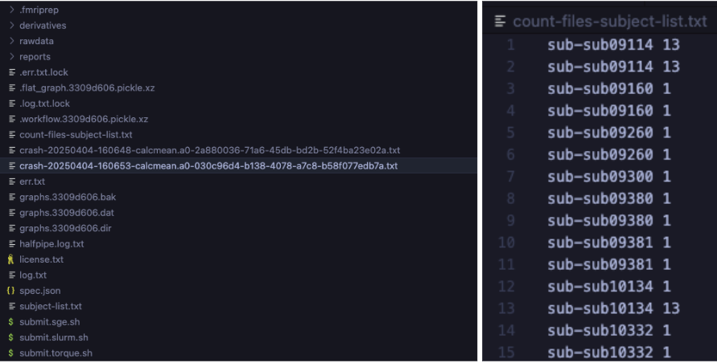
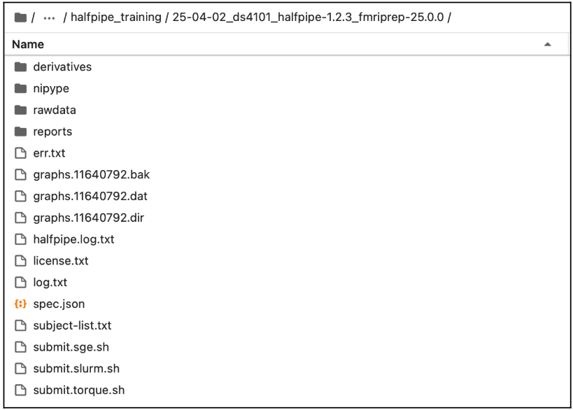
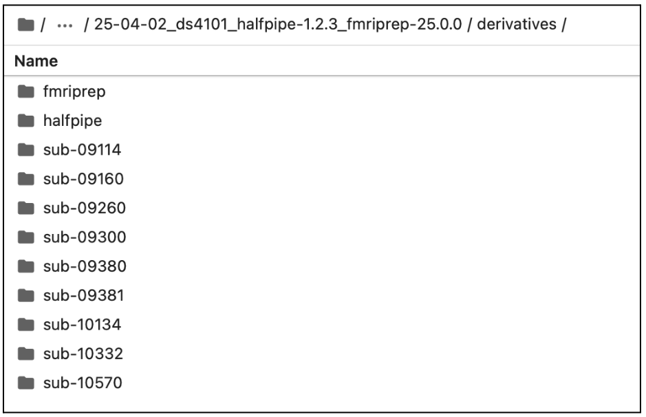

How to run the pipeline, check the outputs, and rerun the failed subjects
1. Run the pipeline
- Navigate to your working directory in terminal:
cd path/to/your_working_space/your_enigma_directory/your_working_dirLet’s visualize the files that have been created with ls
- Check for the files and folders: derivatives, nipype, rawdata, reports, submit.slurm.sh, work, workflow***.pickle.xz, execgraph***.pickle.xz.
- If these files are created, continue to step 3, if not, please have a look at the error file and the troubleshooting page.
- Check for the files and folders: derivatives, nipype, rawdata, reports, submit.slurm.sh, work, workflow***.pickle.xz, execgraph***.pickle.xz.
Open the automatically generated submit.slurm file. Please compare your output to the example provided in the next page:
- Make sure that the path associated with the flag --bind is the same as the one you used to launch the pipeline (section 1.2 of the old manual).
- Verify all the paths, make sure that they are all correct.
- If necessary
- You can edit the #bin bash command (e.g. add #SBATCH --account=def-account in submit.slurm.sh).
- If you are unsure, please refer to your HPC’s documentation or contact your IT support.
- You can edit the #bin bash command (e.g. add #SBATCH --account=def-account in submit.slurm.sh).
- Make sure that the path associated with the flag --bind is the same as the one you used to launch the pipeline (section 1.2 of the old manual).
Depending on your cluster’s configuration (e.g., SGE or Torque), these modifications may need to be applied to a different submit file than the SLURM example provided. Please consult your cluster’s documentation or contact your IT support team to confirm.*
Here is an example of a submit.slurm.sh file generated by HALFpipe:
#!/bin/bash
#SBATCH --job-name=halfpipe
#SBATCH --output=halfpipe.log.txt
#SBATCH --time=05:00:00
#SBATCH --ntasks=1
#SBATCH --cpus-per-task=2
#SBATCH --mem=10752M
#SBATCH --array=1-9
if ! [ -x "$(command -v singularity)" ]; then
module load singularity
fi
singularity run \
--contain --cleanenv \
--bind /home/username \
/home/username/projects/containers/halfpipe-1.2.3.sif \
--workdir /home/username/projects/working_directory \
--only-run \
--uuid 3309d606 \
--subject-list /home/username/projects/working_directory/subject-list.txt \
--subject-chunks \
--only-chunk-index ${SLURM_ARRAY_TASK_ID} \
--nipype-n-procs 2 \
--keep some- To reduce the number of files and the amount of disk space used, please update the submit.slurm file as shown below.
- Look for lines marked with modification ====>, which indicates where you need to add a line and update it with your own path.
- Lines marked with copy-paste ====> can be added as-is, without any changes.
- Ensure that the unchanged lines match those in your original document (e.g., uuid, path to access your HalfPipe container, etc.).
You can copy and paste the following lines into your script, making sure to adjust the paths accordingly:
Example of a submit.slurm.sh file modified to reduce number of file produced and disk usage:
|
modification => copy-paste ==> copy-paste ==> copy-paste ==> copy-paste ==> modification => |
|
- Now run the pipeline by submitting the submit.slurm script that has been created in the pipeline folder.
| SLURM |
|
| SGE |
|
| Torque/PBS |
|
The pipeline will now preprocess all subjects. When they are finished, the quality has to be checked (see section 2 and page quality control).
If you are running this on a local computer, the pipeline will have started. Once it has finished, continue to section 2 to check pre-processing.
2. Check pre-processing and re-run if necessary
In some cases, you will need to ensure the code is compatible with your setup (not just copy and paste), especially regarding the container bindings (see the section 4 of the troubleshooting page). The text highlighted in red requires your attention.
Below are instructions to validate a run of the HALFpipe pipeline and re-run any incomplete subjects.
Open a terminal session.
Navigate to your working directory: cd path/to/your_working_dir
Copy and paste the whole block of code into your terminal session. Then hit enter.
# > incomplete-subject-list.txt
find "derivatives/halfpipe" -type d -path "*/func" | while read task_dir; do
sub_id=$(echo "$task_dir" | grep -o "sub-[^/]*")
file_count=$(find "$task_dir" -type f | wc -l)
echo "$sub_id $file_count"
done | sort > count-files-subject-list.txt
echo "Done. See count-files-subject-list.txt for subject file counts."- Check the Generated Files
After running the command, two files will be created in your working directory:
incomplete-subject-list.txt(empty by default)
count-files-subject-list.txt(lists Subject IDs and number of output files per subject)
- Check for Errors
Use ls to view the contents of your working directory.
If crash files are present:
Open the fileerr.txtand inspect the error messages.
Refer to the troubleshooting page for guidance, then continue to step 6.If no crash files:
Proceed to the page Quality control.
- Validate and Interpret the Output
a. Open count-files-subject-list.txt and compare it with the contents of derivatives/halfpipe/ to verify file counts per subject.
b. If some subjects have fewer files than expected: - Open err.txt to check for errors.
Subjects may legitimately have fewer files (e.g., fewer runs or sessions).
Cross-check with your original dataset before considering a re-run.
c. Manually edit the previously empty file incomplete-subject-list.txt and list only the subject IDs that need to be reprocessed.
d. If all subjects were successfully processed, go directly to the Quality Control Guide.
If not, continue to Step 7 to re-run the pipeline for incomplete subjects.

Left: Example of crash files corresponding to processing errors.
Right: Count-files-subject-list.txt output showing inconsistent file counts per subject;
- Rerun HALFpipe
- Run HALFpipe again with the same command as in Section 1 of the old manual, but add the option --subject-list <path/to/incomplete-subject-list.txt> to the end of the command. Then select Run without modification.
For example:
apptainer run \
--contain \
--cleanenv \
--bind /:/ext \
halfpipe-1.2.3.sif \
--subject-chunks \
--nipype-n-procs 1 \
--keep none \
--subject-list path/to/incomplete-subject-list.txt
Do not forget to adapt your number of CPUs
apptainer run \
--contain \
--cleanenv \
--bind /:/ext \
halfpipe-1.2.3.sif \
--subject-chunks \
--nipype-n-procs 1 \
--keep none \
--subject-list path/to/incomplete-subject-list.txt
- Only if running on a HPC:
- Submit again the job following instruction in Section 1.1.
- After the jobs have finished, rerun the steps in the section until no incomplete subjects remain.
Content of the output
Example of the working directory generated by HALFpipe after completing one of the fMRI Manual:

Example of the derivative folder generated by HALFpipe after completing Section 1:

What’s next?
Once everything has run as expected, you should be able to perform the quality control of your preprocessed images.
If you encounter any problems, please check the troubleshooting page.
Manual adapted from the MDD ENIGMA resting-state fMRI manual and the OCD ENIGMA task-based fMRI manual.